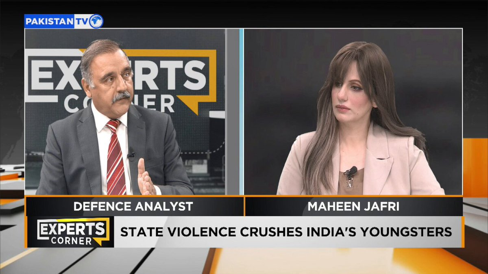
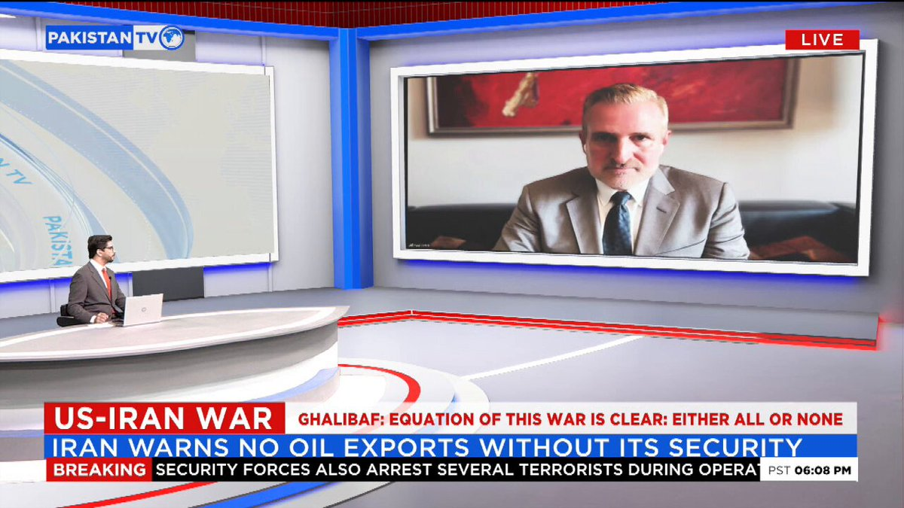

@CBSNews
📝 原文: National Guard deployed as flash floods inundate West Virginia, dropping 7 inches of rain.
🇨🇳 译文: 山洪淹没西弗吉尼亚州时，国民警卫队部署，降雨量达 7 英寸。

🕒 2026-07-23T19:05:00+00:00
| 来源 | 旧窗口内数量 | 本次新增 | 本次淘汰 | 当前窗口内共有 |
|---|---|---|---|---|
| 推文 + Dawn 新闻 | 0 | 48 | 0 | 48 |
| ARY News | 0 | 0 | 0 | 0 |
注：淘汰数 = 旧窗口内数量 + 本次新增 - 当前窗口内共有







暂无文章。